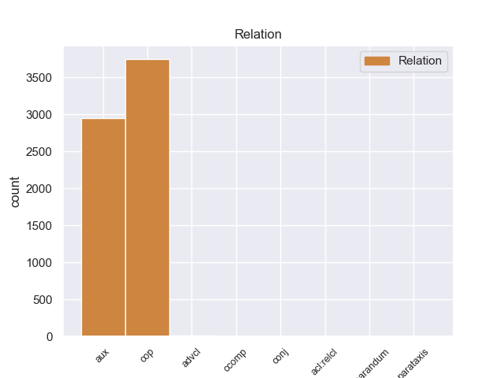
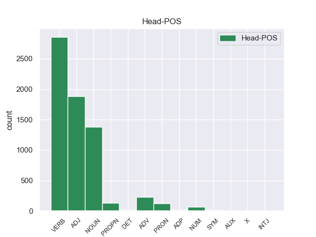
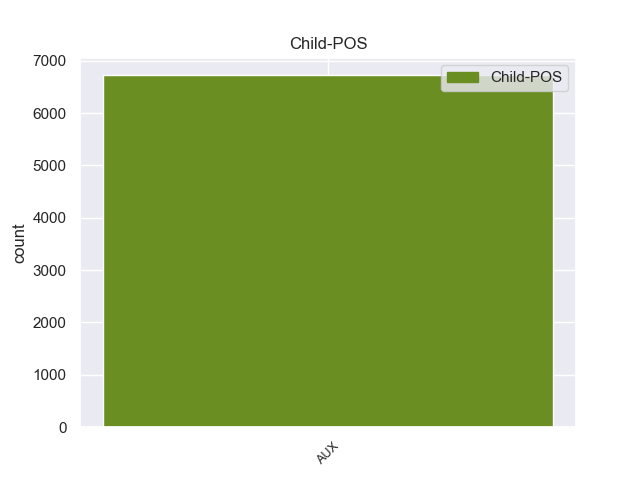

Distribution of features within this leaf



Morphosyntax Rules sorted by frequency.
- When the dependent token is the copula(cop) of the head token, and the dependent token is AUX, the Tense needs to be Pres.
1 The _ _ _ _ 0 _ _ _
2 employees _ _ _ _ 0 _ _ _
3 at _ _ _ _ 0 _ _ _
4 this _ _ _ _ 0 _ _ _
5 Sear's _ _ _ _ 0 _ _ _
6 are be AUX VBP Mood=Ind|Tense=Pres|VerbForm=Fin 8 cop 8:cop _
7 completely _ _ _ _ 0 _ _ _
8 apathetic apathetic ADJ JJ Degree=Pos 0 _ _ _
9 and _ _ _ _ 0 _ _ _
10 there _ _ _ _ 0 _ _ _
11 did _ _ _ _ 0 _ _ _
12 n't _ _ _ _ 0 _ _ _
13 seem _ _ _ _ 0 _ _ _
14 to _ _ _ _ 0 _ _ _
15 be _ _ _ _ 0 _ _ _
16 any _ _ _ _ 0 _ _ _
17 sort _ _ _ _ 0 _ _ _
18 of _ _ _ _ 0 _ _ _
19 management _ _ _ _ 0 _ _ _
20 that _ _ _ _ 0 _ _ _
21 I _ _ _ _ 0 _ _ _
22 could _ _ _ _ 0 _ _ _
23 see _ _ _ _ 0 _ _ _
24 . _ _ _ _ 0 _ _ _
1 Of _ _ _ _ 0 _ _ _
2 course _ _ _ _ 0 _ _ _
3 , _ _ _ _ 0 _ _ _
4 they _ _ _ _ 0 _ _ _
5 could _ _ _ _ 0 _ _ _
6 n't _ _ _ _ 0 _ _ _
7 call _ _ _ _ 0 _ _ _
8 him _ _ _ _ 0 _ _ _
9 either _ _ _ _ 0 _ _ _
10 to _ _ _ _ 0 _ _ _
11 ask _ _ _ _ 0 _ _ _
12 about _ _ _ _ 0 _ _ _
13 it _ _ _ _ 0 _ _ _
14 because _ _ _ _ 0 _ _ _
15 apparently _ _ _ _ 0 _ _ _
16 they _ _ _ _ 0 _ _ _
17 do do AUX VBP Mood=Ind|Tense=Pres|VerbForm=Fin 19 aux 19:aux SpaceAfter=No
18 n't _ _ _ _ 0 _ _ _
19 keep keep VERB VB VerbForm=Inf 0 _ _ _
20 their _ _ _ _ 0 _ _ _
21 employees _ _ _ _ 0 _ _ _
22 ' _ _ _ _ 0 _ _ _
23 phone _ _ _ _ 0 _ _ _
24 numbers _ _ _ _ 0 _ _ _
25 ( _ _ _ _ 0 _ _ _
26 riiight _ _ _ _ 0 _ _ _
27 ) _ _ _ _ 0 _ _ _
28 , _ _ _ _ 0 _ _ _
29 so _ _ _ _ 0 _ _ _
30 I _ _ _ _ 0 _ _ _
31 would _ _ _ _ 0 _ _ _
32 have _ _ _ _ 0 _ _ _
33 to _ _ _ _ 0 _ _ _
34 return _ _ _ _ 0 _ _ _
35 on _ _ _ _ 0 _ _ _
36 Monday _ _ _ _ 0 _ _ _
37 ( _ _ _ _ 0 _ _ _
38 driving _ _ _ _ 0 _ _ _
39 for _ _ _ _ 0 _ _ _
40 3 _ _ _ _ 0 _ _ _
41 days _ _ _ _ 0 _ _ _
42 now _ _ _ _ 0 _ _ _
43 with _ _ _ _ 0 _ _ _
44 no _ _ _ _ 0 _ _ _
45 wheel _ _ _ _ 0 _ _ _
46 lock _ _ _ _ 0 _ _ _
47 should _ _ _ _ 0 _ _ _
48 I _ _ _ _ 0 _ _ _
49 get _ _ _ _ 0 _ _ _
50 a _ _ _ _ 0 _ _ _
51 flat _ _ _ _ 0 _ _ _
52 ) _ _ _ _ 0 _ _ _
53 . _ _ _ _ 0 _ _ _
1 I _ _ _ _ 0 _ _ _
2 personally _ _ _ _ 0 _ _ _
3 have _ _ _ _ 0 _ _ _
4 had _ _ _ _ 0 _ _ _
5 wonderful _ _ _ _ 0 _ _ _
6 service _ _ _ _ 0 _ _ _
7 and _ _ _ _ 0 _ _ _
8 if _ _ _ _ 0 _ _ _
9 you _ _ _ _ 0 _ _ _
10 re be AUX VBP Mood=Ind|Tense=Pres|VerbForm=Fin 22 advcl 22:advcl:if _
11 truely _ _ _ _ 0 _ _ _
12 looking _ _ _ _ 0 _ _ _
13 for _ _ _ _ 0 _ _ _
14 a _ _ _ _ 0 _ _ _
15 FAMILY _ _ _ _ 0 _ _ _
16 practice _ _ _ _ 0 _ _ _
17 ... _ _ _ _ 0 _ _ _
18 Warner _ _ _ _ 0 _ _ _
19 Family _ _ _ _ 0 _ _ _
20 is _ _ _ _ 0 _ _ _
21 the _ _ _ _ 0 _ _ _
22 place place NOUN NN Number=Sing 0 _ _ _
23 for _ _ _ _ 0 _ _ _
24 you _ _ _ _ 0 _ _ _
25 . _ _ _ _ 0 _ _ _
1 Very _ _ _ _ 0 _ _ _
2 disappointed disappointed ADJ JJ Degree=Pos 0 _ _ _
3 in _ _ _ _ 0 _ _ _
4 Kitchen _ _ _ _ 0 _ _ _
5 Aid _ _ _ _ 0 _ _ _
6 as _ _ _ _ 0 _ _ _
7 well _ _ _ _ 0 _ _ _
8 , _ _ _ _ 0 _ _ _
9 I _ _ _ _ 0 _ _ _
10 thought _ _ _ _ 0 _ _ _
11 that _ _ _ _ 0 _ _ _
12 they _ _ _ _ 0 _ _ _
13 pre-screened _ _ _ _ 0 _ _ _
14 their _ _ _ _ 0 _ _ _
15 vendors _ _ _ _ 0 _ _ _
16 for _ _ _ _ 0 _ _ _
17 price _ _ _ _ 0 _ _ _
18 and _ _ _ _ 0 _ _ _
19 quality _ _ _ _ 0 _ _ _
20 of _ _ _ _ 0 _ _ _
21 work _ _ _ _ 0 _ _ _
22 , _ _ _ _ 0 _ _ _
23 obviously _ _ _ _ 0 _ _ _
24 they _ _ _ _ 0 _ _ _
25 do do AUX VBP Mood=Ind|Tense=Pres|VerbForm=Fin 2 parataxis 2:parataxis _
26 not _ _ _ _ 0 _ _ _
27 ! _ _ _ _ 0 _ _ _
1 The _ _ _ _ 0 _ _ _
2 motel _ _ _ _ 0 _ _ _
3 is _ _ _ _ 0 _ _ _
4 very _ _ _ _ 0 _ _ _
5 well _ _ _ _ 0 _ _ _
6 maintained maintain VERB VBN Tense=Past|VerbForm=Part|Voice=Pass 0 _ _ _
7 , _ _ _ _ 0 _ _ _
8 and _ _ _ _ 0 _ _ _
9 the _ _ _ _ 0 _ _ _
10 managers _ _ _ _ 0 _ _ _
11 are _ _ _ _ 0 _ _ _
12 so _ _ _ _ 0 _ _ _
13 accomodating _ _ _ _ 0 _ _ _
14 , _ _ _ _ 0 _ _ _
15 it _ _ _ _ 0 _ _ _
16 's be AUX VBZ Mood=Ind|Number=Sing|Person=3|Tense=Pres|VerbForm=Fin 6 conj 6:conj:and _
17 kind _ _ _ _ 0 _ _ _
18 of _ _ _ _ 0 _ _ _
19 like _ _ _ _ 0 _ _ _
20 visiting _ _ _ _ 0 _ _ _
21 family _ _ _ _ 0 _ _ _
22 each _ _ _ _ 0 _ _ _
23 year _ _ _ _ 0 _ _ _
24 ! _ _ _ _ 0 _ _ _
25 ;-) _ _ _ _ 0 _ _ _
1 I _ _ _ _ 0 _ _ _
2 see see VERB VBP Mood=Ind|Tense=Pres|VerbForm=Fin 0 _ _ _
3 you _ _ _ _ 0 _ _ _
4 re be AUX VBP Mood=Ind|Tense=Pres|VerbForm=Fin 2 ccomp 2:ccomp _
5 still _ _ _ _ 0 _ _ _
6 recovering _ _ _ _ 0 _ _ _
7 from _ _ _ _ 0 _ _ _
8 the _ _ _ _ 0 _ _ _
9 accident _ _ _ _ 0 _ _ _
10 . _ _ _ _ 0 _ _ _
1 It _ _ _ _ 0 _ _ _
2 has _ _ _ _ 0 _ _ _
3 cat _ _ _ _ 0 _ _ _
4 's _ _ _ _ 0 _ _ _
5 " _ _ _ _ 0 _ _ _
6 Meowing _ _ _ _ 0 _ _ _
7 " _ _ _ _ 0 _ _ _
8 for _ _ _ _ 0 _ _ _
9 the _ _ _ _ 0 _ _ _
10 vocals _ _ _ _ 0 _ _ _
11 , _ _ _ _ 0 _ _ _
12 and _ _ _ _ 0 _ _ _
13 you _ _ _ _ 0 _ _ _
14 might _ _ _ _ 0 _ _ _
15 really _ _ _ _ 0 _ _ _
16 find _ _ _ _ 0 _ _ _
17 yourself _ _ _ _ 0 _ _ _
18 in _ _ _ _ 0 _ _ _
19 those _ _ _ _ 0 _ _ _
20 furnaces _ _ _ _ 0 _ _ _
21 , _ _ _ _ 0 _ _ _
22 feeling _ _ _ _ 0 _ _ _
23 and _ _ _ _ 0 _ _ _
24 thinking _ _ _ _ 0 _ _ _
25 those _ _ _ _ 0 _ _ _
26 terrible _ _ _ _ 0 _ _ _
27 feelings feeling NOUN NNS Number=Plur 0 _ _ _
28 and _ _ _ _ 0 _ _ _
29 thoughts _ _ _ _ 0 _ _ _
30 that _ _ _ _ 0 _ _ _
31 these _ _ _ _ 0 _ _ _
32 cats _ _ _ _ 0 _ _ _
33 do do AUX VBP Mood=Ind|Tense=Pres|VerbForm=Fin 27 acl:relcl 27:acl:relcl _
34 before _ _ _ _ 0 _ _ _
35 they _ _ _ _ 0 _ _ _
36 die _ _ _ _ 0 _ _ _
37 . _ _ _ _ 0 _ _ _
1 In _ _ _ _ 0 _ _ _
2 your _ _ _ _ 0 _ _ _
3 experience _ _ _ _ 0 _ _ _
4 how _ _ _ _ 0 _ _ _
5 long _ _ _ _ 0 _ _ _
6 do do AUX VBP Mood=Ind|Tense=Pres|VerbForm=Fin 11 reparandum 11:reparandum _
7 cats _ _ _ _ 0 _ _ _
8 do _ _ _ _ 0 _ _ _
9 cats _ _ _ _ 0 _ _ _
10 typically _ _ _ _ 0 _ _ _
11 live live VERB VB VerbForm=Inf 0 _ _ _
12 ? _ _ _ _ 0 _ _ _
non-conforming Examples:
1 DPA _ _ _ _ 0 _ _ _
2 : _ _ _ _ 0 _ _ _
3 Iraqi _ _ _ _ 0 _ _ _
4 authorities _ _ _ _ 0 _ _ _
5 announced _ _ _ _ 0 _ _ _
6 that _ _ _ _ 0 _ _ _
7 they _ _ _ _ 0 _ _ _
8 had have AUX VBD Mood=Ind|Tense=Past|VerbForm=Fin 9 aux 9:aux _
9 busted bust VERB VBN Tense=Past|VerbForm=Part 0 _ _ _
10 up _ _ _ _ 0 _ _ _
11 3 _ _ _ _ 0 _ _ _
12 terrorist _ _ _ _ 0 _ _ _
13 cells _ _ _ _ 0 _ _ _
14 operating _ _ _ _ 0 _ _ _
15 in _ _ _ _ 0 _ _ _
16 Baghdad _ _ _ _ 0 _ _ _
17 . _ _ _ _ 0 _ _ _
1 Two _ _ _ _ 0 _ _ _
2 of _ _ _ _ 0 _ _ _
3 them _ _ _ _ 0 _ _ _
4 were be AUX VBD Mood=Ind|Tense=Past|VerbForm=Fin 6 aux 6:aux _
5 being _ _ _ _ 0 _ _ _
6 run run VERB VBN Tense=Past|VerbForm=Part|Voice=Pass 0 _ _ _
7 by _ _ _ _ 0 _ _ _
8 2 _ _ _ _ 0 _ _ _
9 officials _ _ _ _ 0 _ _ _
10 of _ _ _ _ 0 _ _ _
11 the _ _ _ _ 0 _ _ _
12 Ministry _ _ _ _ 0 _ _ _
13 of _ _ _ _ 0 _ _ _
14 the _ _ _ _ 0 _ _ _
15 Interior _ _ _ _ 0 _ _ _
16 ! _ _ _ _ 0 _ _ _
1 The _ _ _ _ 0 _ _ _
2 third _ _ _ _ 0 _ _ _
3 was be AUX VBD Mood=Ind|Number=Sing|Person=3|Tense=Past|VerbForm=Fin 5 aux 5:aux _
4 being _ _ _ _ 0 _ _ _
5 run run VERB VBN Tense=Past|VerbForm=Part|Voice=Pass 0 _ _ _
6 by _ _ _ _ 0 _ _ _
7 the _ _ _ _ 0 _ _ _
8 head _ _ _ _ 0 _ _ _
9 of _ _ _ _ 0 _ _ _
10 an _ _ _ _ 0 _ _ _
11 investment _ _ _ _ 0 _ _ _
12 firm _ _ _ _ 0 _ _ _
13 . _ _ _ _ 0 _ _ _
1 You _ _ _ _ 0 _ _ _
2 wonder _ _ _ _ 0 _ _ _
3 if _ _ _ _ 0 _ _ _
4 he _ _ _ _ 0 _ _ _
5 was be AUX VBD Mood=Ind|Number=Sing|Person=3|Tense=Past|VerbForm=Fin 6 aux 6:aux _
6 manipulating manipulate VERB VBG Tense=Pres|VerbForm=Part 0 _ _ _
7 the _ _ _ _ 0 _ _ _
8 market _ _ _ _ 0 _ _ _
9 with _ _ _ _ 0 _ _ _
10 his _ _ _ _ 0 _ _ _
11 bombing _ _ _ _ 0 _ _ _
12 targets _ _ _ _ 0 _ _ _
13 . _ _ _ _ 0 _ _ _
1 The _ _ _ _ 0 _ _ _
2 cells _ _ _ _ 0 _ _ _
3 were be AUX VBD Mood=Ind|Tense=Past|VerbForm=Fin 4 aux 4:aux _
4 operating operate VERB VBG Tense=Pres|VerbForm=Part 0 _ _ _
5 in _ _ _ _ 0 _ _ _
6 the _ _ _ _ 0 _ _ _
7 Ghazaliyah _ _ _ _ 0 _ _ _
8 and _ _ _ _ 0 _ _ _
9 al _ _ _ _ 0 _ _ _
10 - _ _ _ _ 0 _ _ _
11 Jihad _ _ _ _ 0 _ _ _
12 districts _ _ _ _ 0 _ _ _
13 of _ _ _ _ 0 _ _ _
14 the _ _ _ _ 0 _ _ _
15 capital _ _ _ _ 0 _ _ _
16 . _ _ _ _ 0 _ _ _